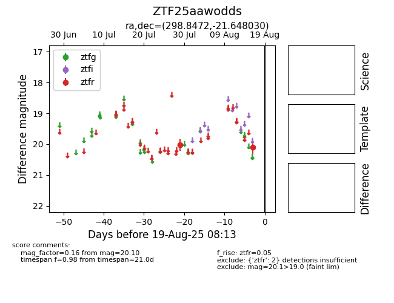

Target ZTF25aawodds at 2025-08-19 08:13, see:
FINK: fink-portal.org/ZTF25aawodds
Lasair: lasair-ztf.lsst.ac.uk/objects/ZTF25aawodds
ALeRCE: alerce.online/object/ZTF25aawodds
alt names
ZTF25aawodds (ztf,fink)
coordinates:
equatorial (ra, dec) = (298.8472,-21.64803)
galactic (l, b) = (19.6096,-23.33184)
photometry
last ztfr=20.10
2 ztfr detections
